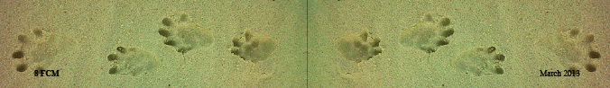

River and wetland ecosystems are amongst the most threatened, yet most valuable systems worldwide. Habitat degradation through increasing urbanisation and water pollution are two of the largest threats to these systems, and to the animals dependent on them for survival. Of particular concern in urban areas is sewage, and the dumping or run off of waste into water ways. Sewage effluent contains industrial waste, municipal wastes, domestic waste, animal remains and faecal matter, all containing a variety of harmful substances. Toxic chemicals are known to enter the food chain and accumulate in the tissues of top predators, leading to infertility, poor health and vulnerability to disease. Throughout the world, otters and other aquatic top predators have suffered population declines and even local extinctions due to exposure and subsequent bioaccumulation of toxic pollutants.
The Cape Clawless Otter (Aonyx capensis) occupies the role of top predator in the Western Cape's aquatic systems and is a potentially important umbrella species for freshwater ecosystems. Listed as ‘Least Concern' on IUCN's Red List, it may also serve as an important flagship species and bio-indicator of water pollution throughout the Western Cape and South Africa. Within the Western Cape, the Cape Peninsula provides a microcosm of the current threats to otter survival with both urban and agricultural land transformation altering their natural habitat and both chronic and acute pollution events threatening their health. Presently there is no data on the biology, distribution and conservation status of otters in the Cape Peninsula and thus there is no baseline data upon which to assess the combined effects of habitat loss and pollution of aquatic ecosystems on the distribution, abundance and health of otters.
It is for this reason that UCT began a PhD project to study the otters in the Cape Peninsula. Their reliance on fresh water in an urban environment like the South Peninsula does put them at risk to exposure to pollutants and the loss of suitable habitat. In addition, the fact that they're most active at dawn and dusk makes them difficult to monitor, and so any change in population size might not be noted until it is too late. Still in its early stages, the project aims to understand the spatial ecology of otters living in the Peninsula: how they use the urban space as opposed to the more natural, pristine areas; and, most importantly, to gain insight into how they are coping with the pollution loads in the urban rivers. Ultimately, by understanding the needs of an aquatic top predator, the project hopes to provide management recommendations for the conservation and sustainable use of the Peninsula's rivers and wetlands, which in turn will benefit all species dependent on these systems for their survival.
As part of the data collection, we are asking for all sightings of otters to be reported to the Peninsula Otter Watch who coordinates otter sightings to monitor the presence of otters in the Cape. Please contact Nicola Okes with details of any otter sightings, injuries or deaths. If possible, indicate: location, time, unusual behaviour or markings/injuries, what the otter was doing, and any other information you may have. Photographs and GPS positions of sightings are most welcome. Further information can be found and sightings can be submitted online at www.nicolaokes.co.za
African clawless otters can be found anywhere from open coastal plains, to semiarid regions, to densely forested areas. Surviving mostly in southern Africa, the otters live in areas surrounding permanent bodies of water, usually surrounded by some form of foliage. Logs, branches, and loose foliage greatly appeal to the otter as this provides shelter, shade and great rolling opportunities. Slow and rather clumsy on land, they build burrows in banks near water, allowing for easier food access and a quick escape from predators. In the False Bay area of the Cape Peninsula they have been observed scavenging along beaches and rocks and hunting in shallow surf for mullet. They are mainly nocturnal in urban areas and lie up during the day in quiet bushy areas.
Females give birth to litters containing two to five young around early spring. Mating takes place in short periods throughout the rainy season in December. Afterwards, both males and females go their separate ways and return to their solitary lives once more. Young are raised solely by the females. Gestation lasts around two months (63 days). Weaning takes place between 45 and 60 days, with the young reaching full maturity around one year of age.
The diet of Aonyx capensis primarily includes water-dwelling animals, such as crabs, fish, frogs, and worms. They dive after prey to catch it, then swim to shore again, where they eat. Their fore paws come in handy as searching devices and are great tools for digging on the muddy bottoms of ponds and rivers, picking up rocks and looking under logs. Extremely sensitive whiskers (vibrissae) are used as sensors in the water to pick up the movements of potential prey.
Though mostly solitary animals, African clawless otters will live in neighboring territories of family groups of up to five individuals with each still having its own range within that territory. They mostly keep to themselves, unless seeking a mate. Territories are marked using a pair of anal glands which secrete a particular scent. Each otter is very territorial over its particular range. Awkward on land but acrobats in the water, these animals spend their days swimming and catching food. They return to underground burrows (holts) for safety, cooling or a rubdown using grasses and leaves. Mainly aquatic creatures, their tails are used for locomotion and propel them through the water. They are also used for balance when walking or sitting upright.
Quick in the water and burrowing on land, A. capensis does not have many predators. Its greatest threat comes from the python, which will often lay in wait near or in the water. Other predators would include the crocodile and fish eagles. If threatened, a high-pitched scream is emitted to warn neighboring otters and confuse a predator.
Living in Africa, environments can become very hot. Staying cool means spending time in the water, and also using burrows as a way to escape the highest temperatures of the day. To stay warm, on the other hand, the otters depend solely on their thick fur. Guard hairs cover the body, acting as insulation. Since the otter lacks an insulating layer of body fat, its only means of warmth is provided by its thick coat of fur.
The biggest threat to African clawless otters comes from humans. Aonyx specimens will often forage in man-made fisheries and may be hunted or become entangled in nets. Overfishing by humans may reduce the food supply available to otters. They are sometimes hunted for their thick, soft pelts, which humans use in forms of clothing. In forested areas, logging may be a major threat since erosion leads to greatly increased turbidity in rivers which can in turn greatly reduce the populations of fish on which the otters depend. This may well be a far greater threat to otters than hunting.
